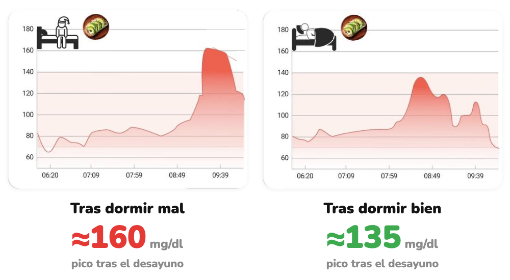

Cómo afecta
Mismo desayuno. Distinta noche.
Cómo dormiste cambia tu glucosa de la mañana.
Desliza →
Hacemos visible lo invisible
Cómo dormiste cambia tu glucosa de la mañana.
Desliza →

Curvas reales de una Viber; picos leídos en la gráfica. La respuesta puede variar entre personas.
Tu cuerpo procesa mejor los alimentos después de una buena noche.
Desliza →
glucovibes.com